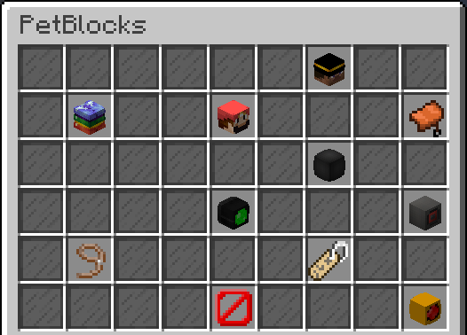

GUI Pages¶
The first thing you should understand when working with the PetBlocks GUI is the concept of different pages.
Usage ingame¶
- When you open the gui for the first time the main page gets rendered for you.
- Click on the wardrobe icon to open the wardrobe page.

- Now the wardrobe page gets rendered for you.
- Pages can be theoretically infinitely stacked, click on the block-skins page.

- The block-skins page gets now rendered.

Configuring in the config.yml¶
Take a look at all default pages in the config.yml.
Note
It is highly recommend to use a editor software which allows collapsing tags to make editing easier. This a screenshot from Notepad ++ for example.

- main
- wardrobe
- block-skins
- colored-block-skins
- player-head-skins
- minecraft-heads-pet-skins
- minecraft-heads-puppet-skins
- minecraft-heads-vehicle-skins
Let’s continue by editing one of these pages on the next page.